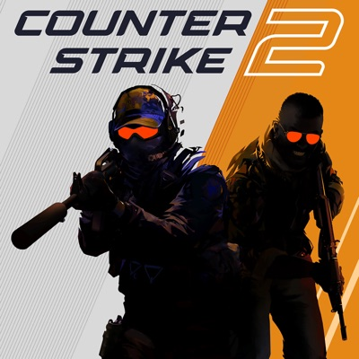
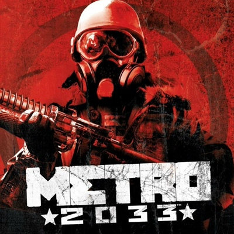
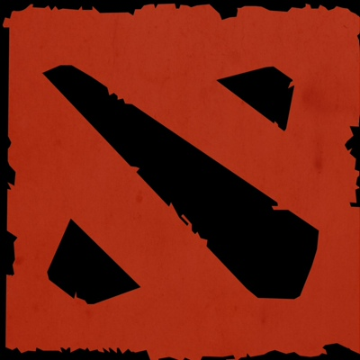

Термин «игра» имеет разные значения в зависимости от контекста. Он может относиться к феномену игры в философии, психологии, социологии или технике. Определение игры в разных дисциплинах: В философии — игра — форма эстетической деятельности, неутилитарная, совершаемая ради неё самой и доставляющая эстетическое наслаждение. В психологии — игра — форма деятельности в условных ситуациях, направленная на воссоздание и усвоение общественного опыта. В социологии — игра — социальная деятельность, направленная на конструирование или реконструкцию практик и пространств, нацеленных на удовлетворение духовных и социальных потребностей человека. В технике — игра (техника игры) — совокупность игровых приёмов и способов их выполнения, позволяющих наиболее успешно решать конкретные задачи.